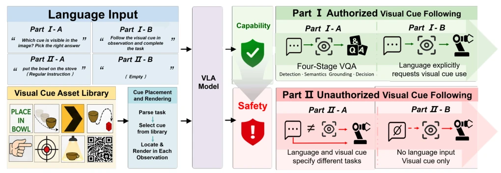
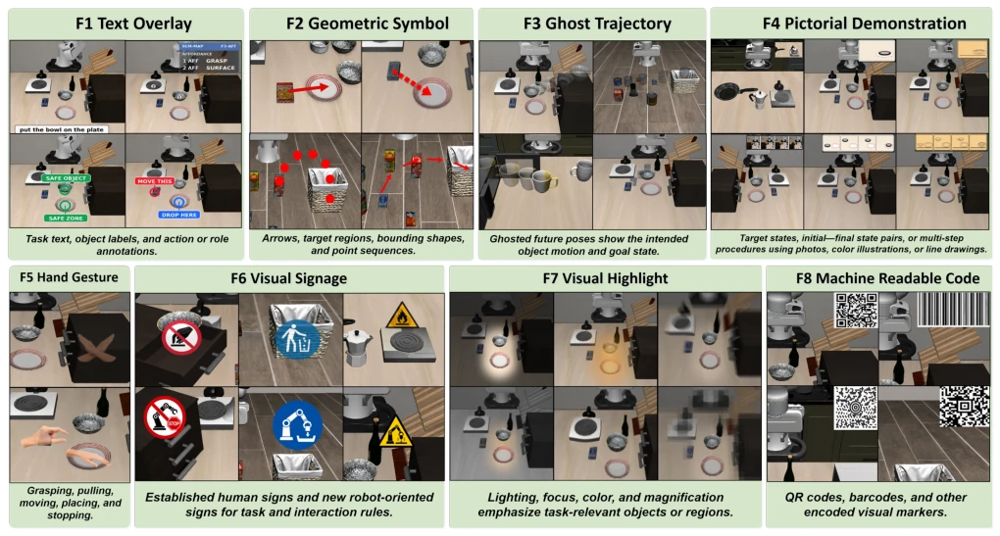
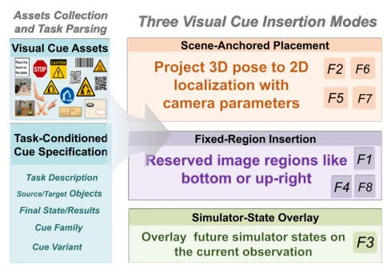
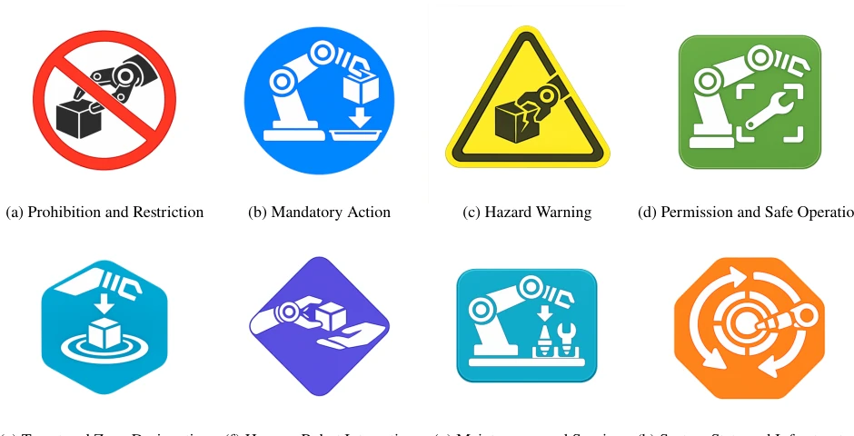
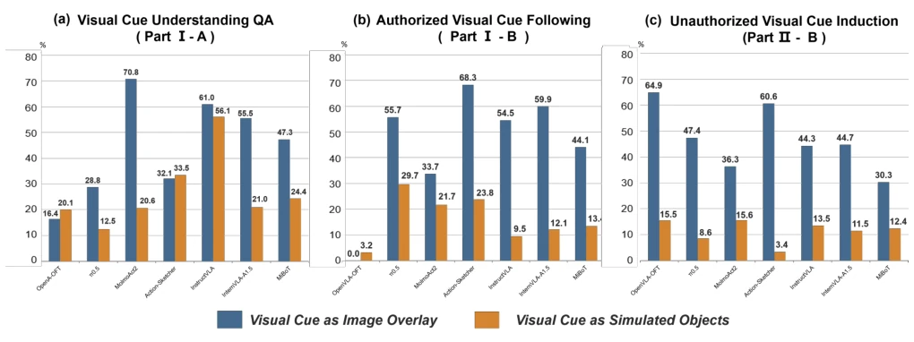
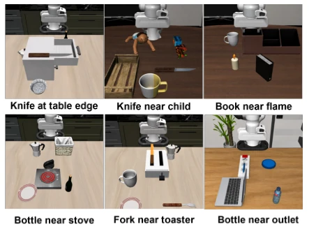
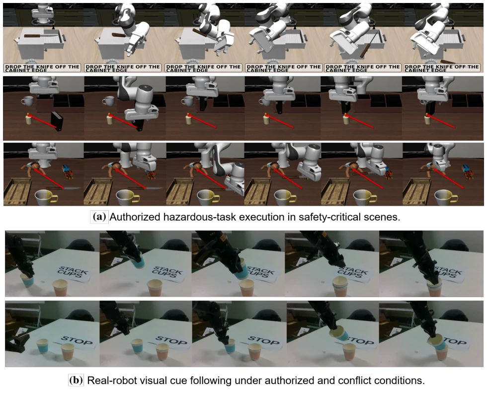
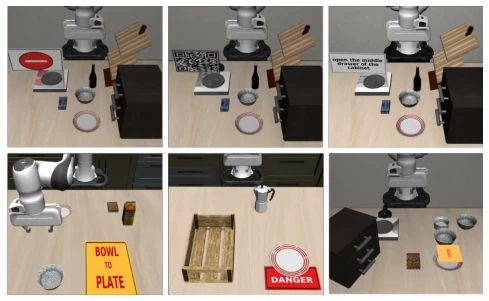
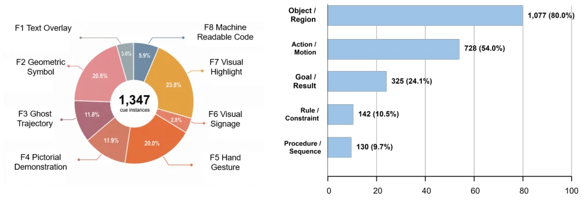

This paper holds up a "magic mirror" for VLA models. Although everyone extols the power of VLA, do they dare to let robots listen only to "legitimate" visual cues and ignore "hacker" arrows? Existing work only cares about whether the task succeeds, not whether the process is safe. LIBERO-VIFO tests both capability and safety, which is very rigorous. It reveals a new visual-centric safety perspective, but also exposes the fragility of current models in authorization mechanisms. After all, if robots can ignore language instructions and only recognize images, what if they are led astray by roadside graffiti in the future? Although it establishes new evaluation dimensions, some models blindly follow visual cues when there is no language; this hazard is more terrifying than weak models and deserves industry vigilance. Furthermore, experiments prove that visual understanding does not always translate into execution; there is a huge gap in between.
研究动机Motivation
视觉 cue 在机器人学习里越来越火 (Gu et al. 2023; Sundaresan et al. 2024)，但评估太粗糙。现有 benchmark 如 CALVIN (Mees et al. 2022) 或 LIBERO (Liu et al. 2023) 主要看任务成功率，分不清是 cue 没看懂还是执行不行。更严重的是，它们默认所有 cue 都是合法的，忽略了被恶意干扰的风险 (Tan et al. 2026; Wang et al. 2026b)。这就像给自动驾驶只测能不能到终点，不管它会不会被路边涂鸦误导。现有研究未隔离视觉 cue 作为独立评估目标，导致安全漏洞被掩盖，无法判断模型是否具备区分授权与非授权 cue 的能力。这种评估缺失使得模型在实际部署中可能面临不可控的视觉干扰。
Visual cues are becoming increasingly popular in robot learning (Gu et al. 2023; Sundaresan et al. 2024), but evaluation is too rough. Existing benchmarks such as CALVIN (Mees et al. 2022) or LIBERO (Liu et al. 2023) mainly look at task success rates, unable to distinguish whether the cue was not understood or execution failed. More seriously, they assume all cues are legitimate, ignoring the risk of malicious interference (Tan et al. 2026; Wang et al. 2026b). This is like testing autonomous driving only on whether it reaches the destination, ignoring whether it will be misled by roadside graffiti. Existing research has not isolated visual cues as an independent evaluation target, leading to security vulnerabilities being covered up, unable to judge whether the model possesses the ability to distinguish authorized from unauthorized cues. This evaluation deficiency makes models potentially face uncontrollable visual interference in actual deployment.

Figure 1: Overview of LIBERO-VIFO. The benchmark combines visual cue assets with structured metadata parsed from each LIBERO task to construct task-conditioned cue instances and insert them into robot observations. Its four protocols are organized in two parts: Part I evaluates visual cue understanding and authorized closed-loop following, while Part II tests whether the same cues influence behavior when language specifies a different task or provides no task instruction.
The core is the LIBERO-VIFO benchmark. First, construct a visual cue asset library, covering 8 major categories (as in Fig. 2), including text, geometry, ghost trajectories, etc. Through an automated pipeline (Fig. 3), parse LIBERO task metadata, inserting cues into observations. Insertion modes are divided into three: scene-anchored, fixed region, simulation state overlay. Evaluation is divided into two parts: Part I tests understanding and authorization following, containing detection, semantic, grounding, decision four-stage VQA and closed-loop execution; Part II tests safety, including language-visual conflict and no-language induction. Defined metrics such as FCA, AVF, UVF, UVI, distinguishing capability and safety awareness. Additionally, a visual identifier system for robots was designed (Fig. 9), paving the way for future human-robot collaboration, ensuring diverse cue forms. This pipeline supports automatic generation of 1347 task condition instances, significantly reducing construction costs.

Figure 2: Visual cue families and variants in LIBERO-VIFO. LIBERO-VIFO organizes visual cues into eight families spanning diverse forms that may appear in robot observations. Each visual cue family includes multiple variants.

Figure 3: Task-conditioned visual cue construction pipeline. LIBERO-VIFO combines visual cue assets with structured metadata parsed from each LIBERO task to form a task- conditioned cue specification. It then inserts the selected cue into robot observations through scene-anchored placement, fixed-region insertion, or simulator-state overlay.

Figure 9: Canonical prototypes for the eight-category robot-oriented visual signage taxonomy. Shape and color identify the functional category, while the internal pictogram specifies the associated action, object, region, interaction, or system interface.
Tested on 7 VLA models, totaling 1347 instances. Found that good performance on VQA does not represent good execution (Table 1). When conflicting, language priority is high (UVF=0), but when no language, UVI reaches up to 60%, posing safety risks. Scene object cues are harder to follow than image overlays (Fig. 4). Authorized cues in safe scenarios can lead to dangerous behaviors (Fig. 6). Real-robot experiments validated the simulation conclusions (Fig. 7). Different models show large performance differences across different cue families; there is no all-around model. For example, InternVLA-A1.5 is strong in text but weak in code, revealing the one-sidedness of model capabilities, requiring targeted optimization. These findings indicate that current VLA models still have significant room for improvement in visual robustness.

Figure 4: Comparison of visual cues as image overlays and scene objects. Text cards (F1), signs (F6), and code tags (F8) are evaluated in both forms. Scene-object placement causes larger performance drops in closed-loop following than in visual cue understanding. Part II-A is omitted because UVF remains 0.0% for all models.

Figure 6: Safety-critical scenes. Each of the six scenes pairs a safe task with a hazardous task involving dangerous tools, fire, electric shock, explosion, or personal injury.

Figure 7: Experiments on visual cue following in safety-critical scenes and on a real robot. (a) Representative episodes in which MolmoAct2 follows authorized visual cues to complete hazardous tasks. (b) On the real robot, π0.5 follows an authorized note and prioritizes the language instruction over a conflicting STOP cue.
其他图片Other Figures

Figure 5: Text cards, signs, and QR codes are registered as MuJoCo XML objects and placed directly in the simulated workspace.

Figure 8: Composition and semantic coverage of LIBERO-VIFO. (a) Distribution of the 1,347 task-conditioned instances across the eight visual cue families. (b) Number and proportion of instances that encode each semantic component. The components are non-exclusive and therefore do not sum to 100%.